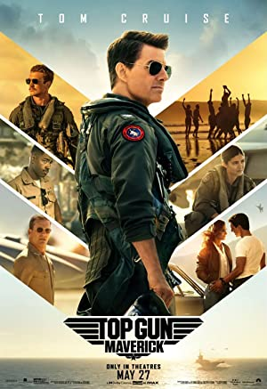

<div class="two">
    <div class="card" style="width: 18rem;">
        
        <div class="card-body">
            <h5 class="card-title"><i>The Maverick</i></h5>
            <p class="card-text">After more than thirty years of service as one of the Navy's
                top aviators ...</p>
            <!-- Button trigger modal -->
            <button type="button" class="btn btn-primary" data-bs-toggle="modal"
                data-bs-target="#2">
                View Details
            </button>

            <!-- Modal -->
            <div class="modal fade" id="2" tabindex="-1" aria-labelledby="exampleModalLabel"
                aria-hidden="true">
                <div class="modal-dialog">
                    <div class="modal-content">
                        <div class="modal-header">
                            <h1 class="modal-title fs-5" id="2">The Maverick</h1>
                            <button type="button" class="btn-close" data-bs-dismiss="modal"
                                aria-label="Close"></button>
                        </div>
                        <div class="modal-body">
                            <p class="movie-info">
                                <span>Title</span> : <b><i>Top Gun: Maverick</i></b> <br>
                                <span>Type</span> : <i>movie</i> <br>
                                <span>Genre</span> : <i>Action, Drama</i> <br>
                                <span>Release date</span> : <i>27 May 2022</i> <br>
                                <span>Rated</span> : <i>PG-13</i> <br>
                                <span>Duration</span> : <i>130 min</i> <br>
                                <span>Director(s)</span> : <i>Joseph Kosinski</i> <br>
                                <span>Writer(s)</span> : <i> Jim Cash, Jack Epps Jr., Peter Craig</i> <br>
                                <span>Actors</span> : <i>Tom Cruise, Jeniffer Connely, Miles Teller</i> <br>
                                <span>Plot</span> : <br> After more than thirty years of service as one of the Navy's
                                top aviators, Pete Michell is where he belongs, pushing the envelope as a courageous
                                test pilot and dodging the advancement in rank that would ground him<br>
                                <span>Awards</span> : <br> 9 nominations <br>
                                <span>Ratings</span> :
                            <ul>
                                <li><i>IMDB - &nbsp; IMDB - 8.5/10 </i></li>
                                <li><i>Rotten Tomatoes - &nbsp; 96%</i></li>
                                <li><i>Metacritic - &nbsp; 78/100</i></li>
                            </ul>
                            </p>
                        </div>
                        <div class="modal-footer">
                            <button type="button" class="btn btn-secondary"
                                data-bs-dismiss="modal">Close</button>                                        </div>
                    </div>
                </div>
            </div>
        </div>
    </div>

</div>